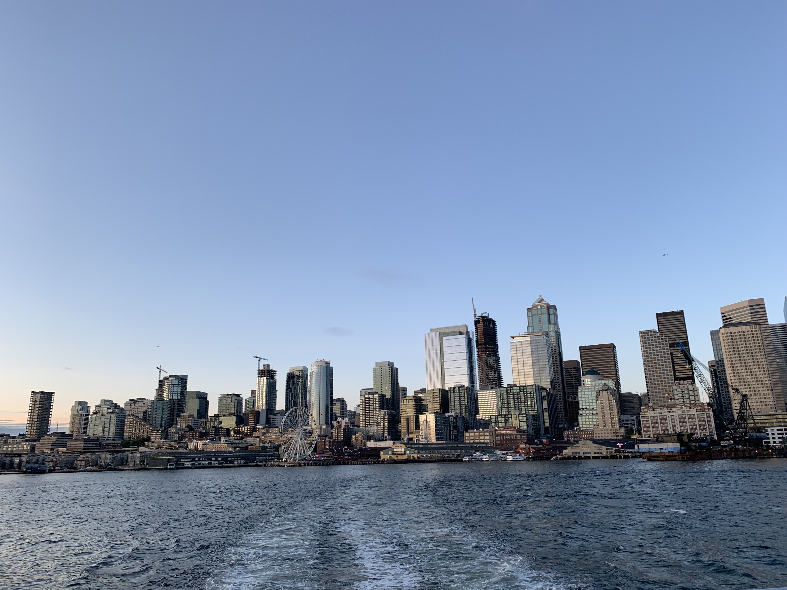
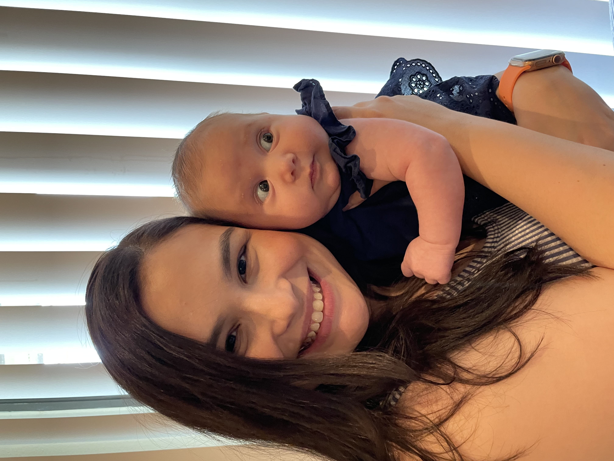
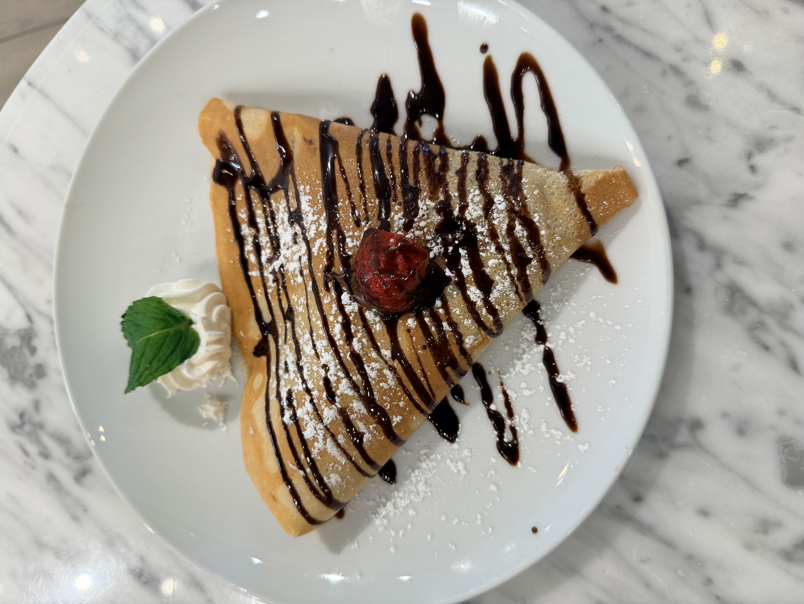
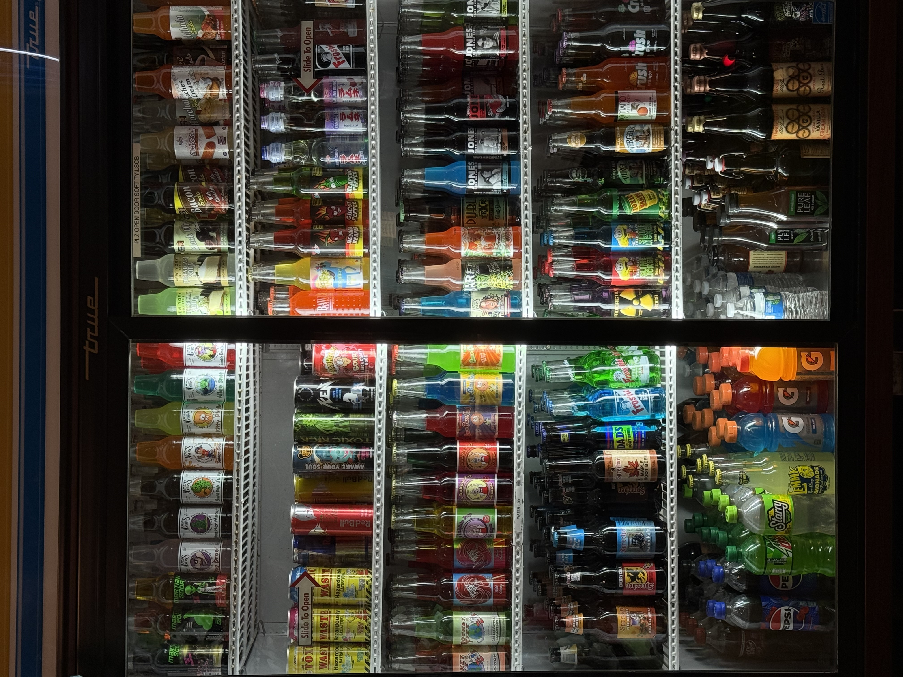
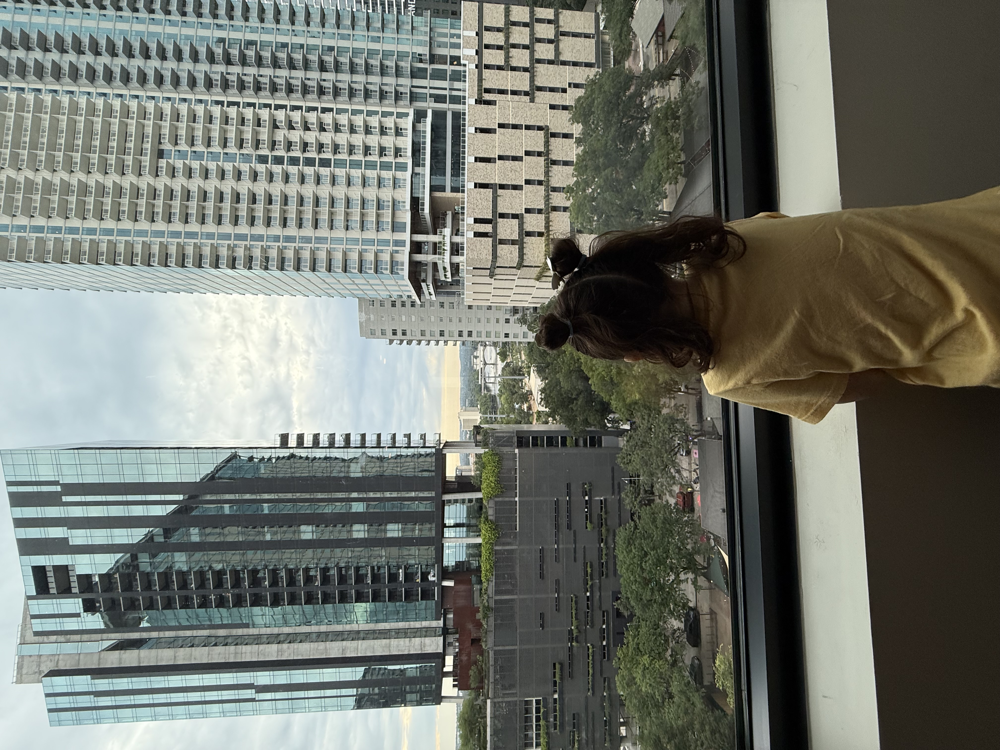
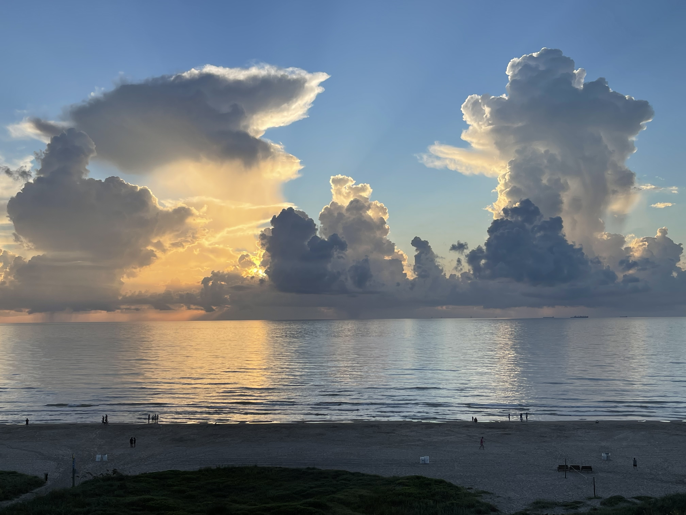

This is my curated collection of things that I love. Each item here represents something meaningful to me, whether it's a favorite book, game, album, rock, mineral, tool, art, or memory. This collection showcases how responsive design allows me to adapt my content across all screen sizes.

Seattle's Skyline
My view of downtown Seattle from a water taxi.
This is one of my favorite photos I've taken. I has just moved to Seattle, Washington and my partner and I took a water taxi to West Seattle for dinner. The sun was setting behind the boat, and the skyline was so beautiful that I had to capture it. I was in awe of the city and it's skyine. The angle of my photo was not the best, but it's a core memory for me. I was very fortunate to live in such a beautiful city and experience all it had to offer.

Becoming A Mother
April 14th, 2021
I became a mother on Apri 14th, 2021 to my beautiful daughter, Natalia. To think that her name was simply just a thought in my head, to her now having my heart, is truly indescribable. Being a mother has many challenges, but I look forward to spending all of my time by her side. She is bright, outspoken, and curious. Her love for life and people is evident in everything she does. As I'm working on this assisgment, she told me that she wasn't a baby aymore, but she will always be my baby girl.

My Sweet Tooth
A Nutella and Strawberry Crepe
I've been known to have a sweeth tooth since I was a very young child. One of my favorite desserts is a Nutella and Strawberry Crepe. I love the combination of the rich, chocolatey Nutella with the fresh, juicy strawberries. It's a comfort treat for me after a long week of work. I usually pair it with an orange juice mimosa, and it's perfect.

Drink Fridge at Lone Star Candy Bar
July, 2024.
Creativity is all around us. I find art in many places. I visited Fredricksburg, Texas in July of 2024 and stumbled upon this drink fridge at Lone Star Candy Bar. The colors and arrangement of the drinks caught my eye. It was a simple yet effective display that made me appreciate the thought and effort that went into it. I found it to be very cool and vintage. It made me happy, even if I didn't buy anything from the fridge.

Admiring The View
Austin, TX
Traveling is something I enjoy doing, even if it's within Texas. Austin, TX holds a special place in my life. I have loved my visits there with my daughter. She enjoys the hotels and I enjoy the scenery. Creating memories for her is my greatest joy, and Austin has always given us beautiful views to admire together.

Sun and Waves
South Padre Island, TX
Would you believe that the view you see in my photo is just an hour drive from my house? I've been going to SPI since I was a baby. I have pictures of toddler me at the beach, with my family, eating watermelon and sandwhiches. I have always loved the beach. There is not a beter feeling tha listening to the waves. The sunrise and sunset at the beach are my favorite times of the day. I feel at peace when I'm there.